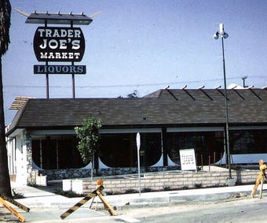

Welcome to my Blog!
I guess you want to know what this page is all about? Congratulations, you have come to the right place! Get a drink and some popcorn and enjoy reading.
I'm your resident expert on all things Trader Joe's and I'm thrilled to share valuable TJ product tips, beautiful photos, and some behind-the-scenes action from a Crew Member. Did I mention I work at Trader Joe's?
Sorry, almost forgot to introduce myself...I'm Zakiyyah, nice to meet you! I'm just another random girl that loves all things Trader Joe's and I happen to work there as well! I hope you get inspired and walk into your neighborhood Joe's for some delicious funky products soon! Here you can read more about me and here is my first blog post.
